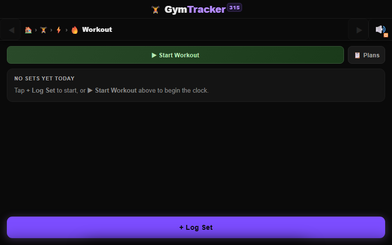
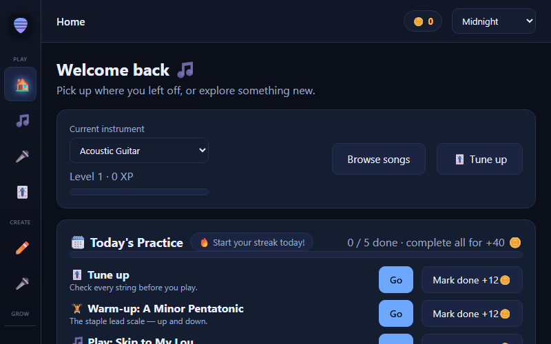
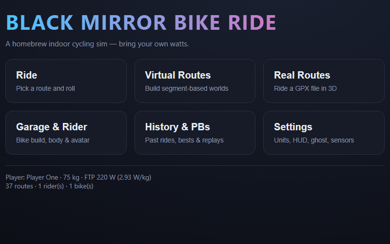
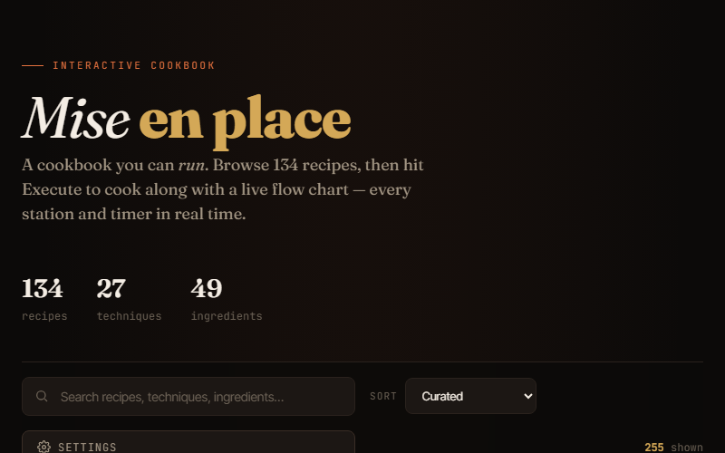

395 commits in the last 52 weeks since 2026 · 395 commits/yr
PWA single file Strava sync cloud sync
Adaptive workout plans and a fast set logger Picker-driven equipment setup: barbell, dumbbell, kettlebell, landmine… Per-exercise reference media and baked-in coaching guides Biometrics plus Strava reconciliation Cloud sync via Google Drive, Dropbox, or OneDrive Offline-first — everything lives in your browser storage Latest: feat 480: tell the maker portal this app is installed 4m ago
Recent changes 6m ago feat 479: the try-later plan queue4h ago feat 478: the targets section collapses too9h ago feat 477: the reference row earns its space10h ago feat 476: MOTION LAB chunk 4 -- the pattern-word router11h ago feat 475: MOTION LAB chunk 3 -- leg raises, get-ups, nordics, rack positions13h ago feat 474 fix: a held plate is a free weight, not the family's cable13h ago feat 474: MOTION LAB chunk 2 -- rotation, overhead carries, the motion carousel19h ago feat 473: MOTION LAB chunk 1 -- the motion-generation submodule19h ago chore: renumber log-sheet tightening to feat 472 (471 was taken by the About-page link in a parallel session)
504 commits in the last 52 weeks since 2026 · 504 commits/yr
Drive sync ⚠ flashing text
Import TXT, DOCX, PDF, EPUB — or OCR-grab text from images ~30 themes and animated reader faces Text-to-speech, voice and clap control Typing and speaking minigames, audiobook recording Measured reading stats and an editable table of contents Latest: Startup: tell the app portal Tachyread is installed 4m ago
Recent changes 7h ago Pace ghost: the goal is the finish line7h ago Reading: race a pace ghost while reading manually7h ago Section bar: subtle page ticks so its grain conveys section length9h ago Mobile: emoji in the minimized dock, no ellipsed labels on the view switch10h ago Mobile: persistent pill page, single-row tabs, uncrowded progress row, emoji13h ago Splash: terse recent-activity line — volume and trajectory, no verdicts1d ago Disclaimer: link to the maker's app portal (adervec.github.io)1d ago Scroll-to-read persists; tab settings go device-local; themed scrollbars2d ago Typing: book + sitting dashboard in the freed-up controls flank

28 commits in the last 52 weeks since 2026 · 28 commits/yr
PWA Drive sync
Streaming note highway with per-note grading Live tuner across 59 instruments and their tunings 45+ public-domain songs, each with a synthesized backing band Karaoke with word-by-word lyrics and pitch scoring Song editor, record-and-transcribe, theory games, courses Latest: Add six app skins, and a check that a skin has CSS 1d ago
Recent changes 1d ago Link the maker's app portal from About & disclaimers3d ago Synthesize backing tracks, and the parts you don't play7d ago Mirror Tachyread's Drive sync and reuse its OAuth client9d ago Expand the instrument roster: 15 -> 599d ago Make the landing page instrument-agnostic10d ago Mobile and desktop layouts10d ago README: link the live site10d ago Deploy: ship manifest, service worker, icons and docs to Pages10d ago Instruments, PWA install, and launcher

23 commits in the last 52 weeks since 2026 · 23 commits/yr
PWA Bluetooth Drive sync
Reads power and heart rate over Web Bluetooth — zero drivers A proper physics model behind every ride Build your own low-poly 3D worlds GPX import plus 34 bundled routes (~660 km) Replay, ride history, and ghosts Latest: Tell the maker's app portal when the app is installed 3m ago
Recent changes 1d ago Link the maker's app portal from the menu footer7d ago Triple model tessellation; stop the ground ending in mid-air7d ago Tabular lists, and guard an in-progress ride from being abandoned7d ago Ship a library of 34 bundled routes (~660 km)7d ago Add 18 more biomes and 31 more props (58 biomes, 114 types)7d ago Add 18 more biomes and 29 more artifact types (40 biomes, 83 props)7d ago Expand to 22 biomes and 54 roadside artifact types7d ago Make the app an installable PWA7d ago Add procedural textures to road and ground surfaces
20 commits in the last 52 weeks since 2026 · 20 commits/yr
PWA offline AI optional
On-device pose analysis — nothing uploaded Objective symmetry and proportion geometry first, opinion second Per-division posing technique (24 mandatories) and live mirror practice Body-composition trends corroborate the photos Aligned progress timelapses Latest: Startup beacon so the app portal knows we're installed 4m ago
Recent changes 1d ago More-apps link (adervec.github.io) in the disclaimer modal5d ago Sidebar everywhere + all scrolling in-app5d ago Per-division mandatories (24 poses) + live Mirror practice page7d ago Browser-only build, deployed to GitHub Pages7d ago Google Drive sync, mirroring Tachyread10d ago Orientation controlled by a setting, not the accelerometer10d ago Patch dependency vulnerabilities10d ago Mark going-public checklist items done (repo is public)10d ago Drag & drop, EXIF dating, guide plates, mobile layout
4 commits in the last 52 weeks since 2026 · 4 commits/yr
PWA offline
Rich per-mini metadata, kitbash-aware, with provenance and value Kanban paint queue, paint timer, deadlines Multi-angle photos, 360° viewer, spin video and GIF export Photo-to-3D mesh and Gaussian-splat viewer, STL/PLY export Armies, points, and a battle log Field-scoped search, bulk edit, CSV, one-file backup Latest: Portal install beacon on startup (same-origin localStorage) 4m ago
Recent changes 1d ago Maker portal link in help dialog (adervec.github.io)4d ago Modern sidebar navigation + 12-theme system (SpeechImprover-style)4d ago Full MicroMiniger PWA: collection manager, 3D scan & splat viewer, cloud backup25d ago initial commit
24 commits in the last 52 weeks since 2026 · 24 commits/yr
PWA Drive sync
Reading passages, improv, articulation drills, or your own text Ten attributes scored 0–100, from pace to projection Free speaking toward a chosen target tone or emotion Projects — read a whole book passage by passage Trends, an activity heatmap, A/B compare, AI-coach export Latest: Register install beacon for the app portal 4m ago
Recent changes 1d ago Maker portal link in Help footer3d ago Non-verbal sound monitor, session=block terminology, radar label fix3d ago Track page ranges, live-chip fixes, auto-submit on completed reading4d ago Count Tachyread audiobook narration as speech training4d ago Live feedback dashboard while recording5d ago Integrate with CoworkSyncHub (cowork-manifest v1)5d ago Wave 3: command palette, bulk History ops, date-aligned charts6d ago More features: date-range trends, CSV export, weekly goal, PWA install6d ago UX + a11y + missing-feature pass across the app

12 commits in the last 52 weeks since 2026 · 12 commits/yr
PWA offline voice
102 recipes plus techniques, ingredients, and equipment guides Execute mode: station swimlanes, a moving playhead, countdowns, alarms Voice control — play, pause, done, skip — with steps read aloud A cook log of every finished cook, exportable Field guides: coffee, tea, alcohol, protein prep — and a box-mix calculator Latest: Register with the app portal when running as an installed PWA 3m ago
Recent changes 1d ago Add About section in Settings linking the maker's app portal7d ago Google Drive sync for the cook log, mirroring Tachyread9d ago Maximal Instant Pot coverage: 20 recipes + 8 reference pages9d ago Add Grid view mode to recipe detail10d ago Add screen-orientation setting (Auto / Portrait / Landscape)10d ago Fold protein guides into the app; add gh-pages deploy31d ago Voice control, cook log for Claude reports, launcher + PWA polish51d ago Add 12 lean high-protein recipes52d ago Slim initial load: fetch catalog data + lazy execute route